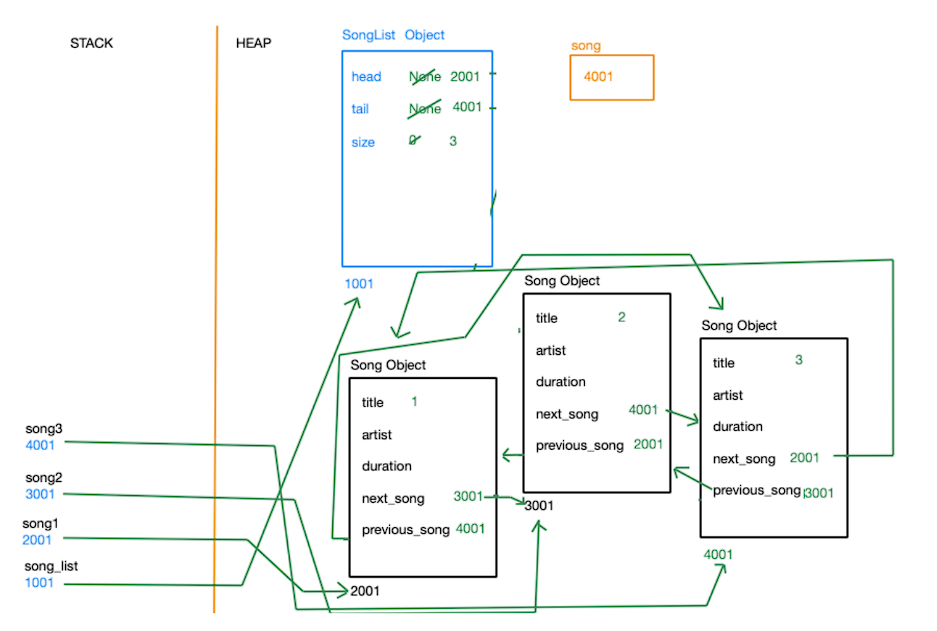
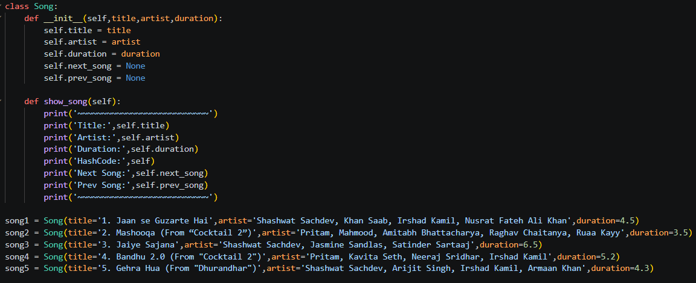
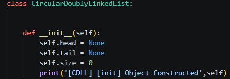
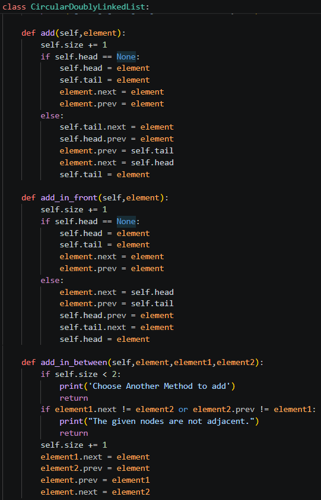
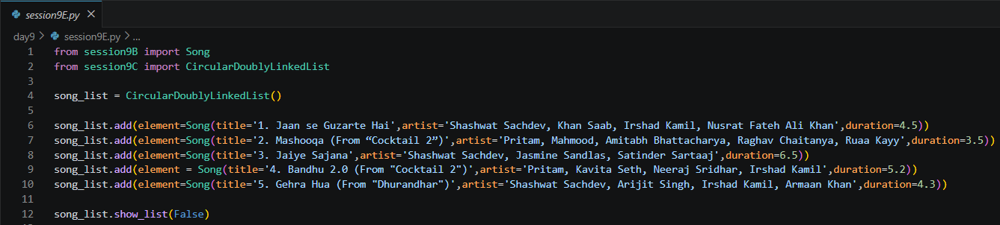
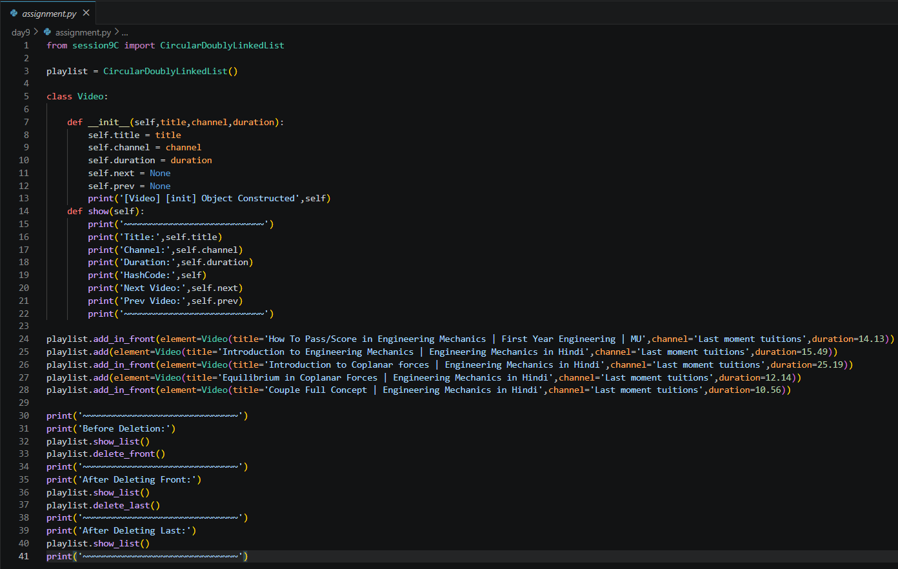

Date: 6th July 2026
Duration: 2:30 Hrs
Training Company: Auribises Technologies
Trainer: Ishant Kumar
Day 9 focused on applying Object-Oriented Programming concepts to build a real-world data structure instead of studying linked lists as isolated algorithms. The session demonstrated how a Circular Doubly Linked List (CDLL) can be designed using classes and objects, making it reusable for practical applications such as music playlists.
Rather than manually connecting objects, we created a dedicated CircularDoublyLinkedList class responsible for managing relationships between song objects. This separation of responsibilities highlighted one of the core principles of Object-Oriented Programming—encapsulation.
The trainer also explained how objects are stored in heap memory while references are maintained by other objects, reinforcing our understanding of memory management and object relationships through detailed stack and heap visualizations.
The session began by modelling a music playlist similar to the one used by Gaana.com. Each song was represented as an independent object containing its own data along with references to the next and previous songs in the playlist.
This demonstrated how complex software systems are built by connecting multiple objects instead of relying on primitive data types alone.

A dedicated Song class was created to model every song in the playlist. Each object stored essential information such as the song title, artist, duration, and two references pointing to the next and previous songs.
The class also contained a display method for printing complete information about each object, allowing us to verify how every node was connected inside the Circular Doubly Linked List.

Instead of hardcoding connections between songs, we developed a reusable CircularDoublyLinkedList class. The playlist object maintained three important attributes:
Whenever songs were added or removed, these references were automatically updated, ensuring that the playlist always remained circular and doubly linked.

The majority of the session was devoted to implementing essential playlist operations. Each function required careful manipulation of object references so that no links were broken after insertion or deletion.
Unlike singly linked lists, every operation required updating both the next and previous references while preserving the circular structure of the playlist.

During the practical session, we implemented a complete Gaana.com Playlist Manager using a Circular Doubly Linked List. Instead of connecting song objects manually, every song was inserted dynamically into the playlist using dedicated CDLL methods. This demonstrated how data structures can be designed as reusable software components rather than isolated algorithms.
The trainer also explained how every insertion and deletion modifies object references in memory. By observing the stack and heap diagrams alongside the execution of the program, we gained a much clearer understanding of how objects communicate with one another through references.

The assignment required us to implement the same Circular Doubly Linked List using a completely different real-world object instead of songs. The objective was to prove that the data structure is generic and reusable regardless of the application domain.
Possible examples included Flights, Chat Messages, Browser Tabs, Video Playlists, or any similar system involving sequential navigation.
For my implementation, I chose to build a YouTube Playlist Manager. I created a custom
Video class where every video object stores its title, channel name, duration, and references
to both the next and previous videos in the playlist.
The playlist itself was managed by the reusable CircularDoublyLinkedList class developed during
the session. By simply changing the node object from Song to Video, I was able to
reuse the same data structure without modifying its internal implementation, demonstrating the flexibility
of Object-Oriented Programming.
The YouTube playlist supports several important operations including:
This assignment reinforced the concept that a well-designed data structure can be reused across multiple applications simply by changing the type of object it stores.

View Assignment Solution on GitHub
Day 9 was one of the most practical sessions of the training so far because it connected Object-Oriented Programming with Data Structures. Rather than implementing a Circular Doubly Linked List as a standalone algorithm, we designed it as a reusable class capable of managing real-world objects. This approach made the implementation much easier to understand and demonstrated how software systems are actually developed.
The memory diagrams explaining the interaction between the stack and heap helped me visualize how objects
are connected through references. Seeing the head, tail, and song objects linked
together made concepts that usually feel abstract much more intuitive.
I particularly enjoyed the assignment because I was able to reuse the same Circular Doubly Linked List implementation for a completely different application—a YouTube Playlist Manager. It reinforced the importance of writing modular, reusable code and showed how a well-designed data structure can solve problems across multiple domains with minimal modifications.
The next session will continue building on Object-Oriented Programming by exploring more advanced concepts, applying reusable class designs to larger problems, and implementing additional real-world applications using Python.